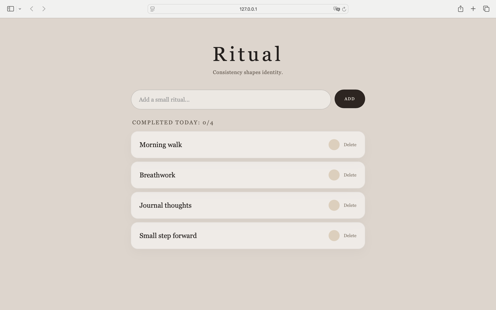
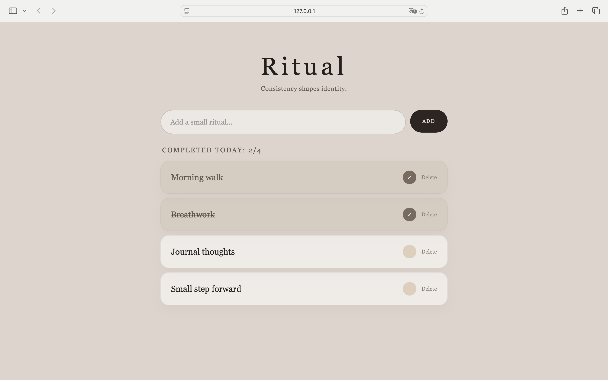
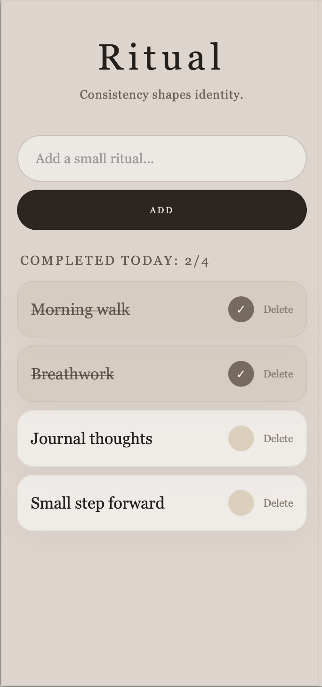

Support project
Ritual
Minimalist habit tracker built with Vanilla JavaScript, practicing state-driven rendering, daily reset logic and responsive UI design.
Ritual is a small focused project I built to repeat and strengthen the core mechanics of frontend development: working with state, rendering UI from data, updating arrays, handling events and saving data in localStorage.
Desktop preview


Mobile experience
Ritual was designed to feel calm and clean on small screens, with clear spacing, readable typography and comfortable touch targets.

What it does
Users can add daily habits, mark them as completed, delete them, track daily progress and return the next day with all habits automatically reset.
What made it important for me
After building a larger project, I wanted to slow down and rebuild the fundamentals in a smaller, cleaner form. Ritual helped me practice the same JavaScript mechanisms without hiding behind complexity.
Main challenges
- Building the automatic daily reset using Date and localStorage
- Keeping the UI simple, responsive and visually polished